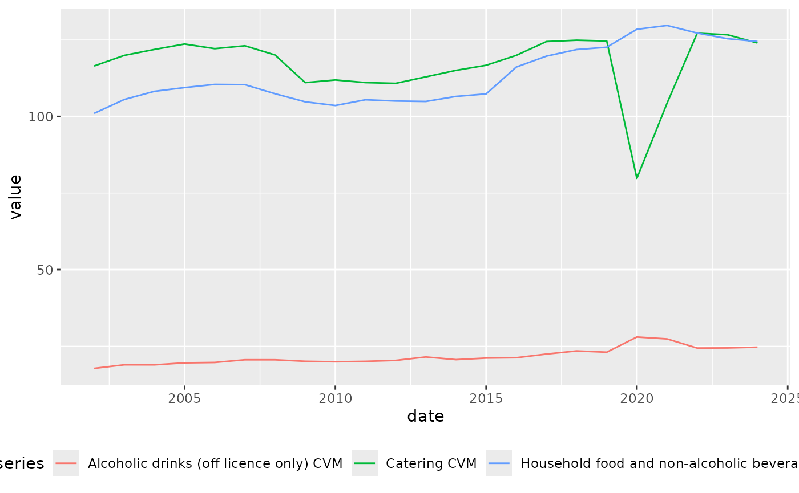

Consumer Expenditure
ct.RmdAcquire and plot data
Data source is ONS Consumer Trends data.
ct <- acquire_ct()
ct_metadata <- get_ct_metadata(ct)
#> New names:
#> New names:
#> • `09.5.4 Newspapers; books & stationery Stationery & drawing materials CVM
#> NAYear £m` -> `09.5.4 Newspapers; books & stationery Stationery & drawing
#> materials CVM NAYear £m...168`
#> • `09.5.4 Newspapers; books & stationery Stationery & drawing materials CVM
#> NAYear £m` -> `09.5.4 Newspapers; books & stationery Stationery & drawing
#> materials CVM NAYear £m...1041`
ct_year <- get_ct_year(ct)
# alternate c("ABZV","ADFM","ADIG","ABQI","ADIP","ADIT","ADML")
cdids <- c("ABZV", "ADFM", "ADXO", "ADXP")
data <- ct_metadata |>
dplyr::filter(cdid %in% cdids) |>
dplyr::left_join(ct_year) |>
dplyr::mutate(series = dplyr::case_when(cdid == "ABZV" ~ "Household food and non-alcoholic beverages",
cdid == "ADFM" ~ "Alcoholic drinks (off licence only)",
cdid %in% c("ADXO", "ADXP") ~ "Catering")) |>
dplyr::group_by(series, date) |>
dplyr::summarise(value = sum(value))
#> Joining with `by = join_by(cdid)`
#> `summarise()` has grouped output by 'series'. You can override using the
#> `.groups` argument.
alternate <- c("ABZV","ADFM","ADIG","ADIP","ADIT","ADML","ABQI")
auk_data <- ct_metadata |>
dplyr::filter(cdid %in% alternate) |>
dplyr::left_join(ct_year) |>
dplyr::mutate(series = dplyr::case_when(cdid == "ABZV" ~ "Household food and non-alcoholic beverages",
cdid == "ADFM" ~ "Alcoholic drinks (off licence only)",
cdid == "ADIG" ~ "Catering",
cdid == "ADIP" ~ "Household food and non-alcoholic beverages CVM",
cdid == "ADIT" ~ "Alcoholic drinks (off licence only) CVM",
cdid == "ADML" ~ "Catering CVM",
cdid == "ABQI" ~ "Household final consumption expenditure")) |>
dplyr::group_by(series, date) |>
dplyr::summarise(value = sum(value)) |>
tidyr::pivot_wider(names_from=series,values_from=value)|>
dplyr::mutate("Total food, drink and catering expenditure"=`Household food and non-alcoholic beverages`+`Catering`+`Alcoholic drinks (off licence only)`)|>
dplyr::mutate("Total food, drink and catering expenditure CVM"=`Household food and non-alcoholic beverages CVM`+`Catering CVM`+`Alcoholic drinks (off licence only) CVM`)|>
dplyr::mutate("percent of total expenditure- Total food, drink and catering expenditure"=scales::label_percent(accuracy=0.1)(`Total food, drink and catering expenditure`/`Household final consumption expenditure`))|>
dplyr::mutate("percent of total expenditure- household food"=scales::label_percent(accuracy=0.1)(`Household food and non-alcoholic beverages`/`Household final consumption expenditure`))|>
dplyr::mutate("percent of total expenditure- food eaten out"=scales::label_percent(accuracy=0.1)(`Catering`/`Household final consumption expenditure`))|> dplyr::mutate("percent of total expenditure- alcohol"=scales::label_percent(accuracy=0.1)(`Alcoholic drinks (off licence only)`/`Household final consumption expenditure`))
#> Joining with `by = join_by(cdid)`
#> `summarise()` has grouped output by 'series'. You can override using the
#> `.groups` argument.
write.csv(auk_data,"figure_14_5_food_expenditure.csv") #maybe saving here not optimal? For David to check
data |>
dplyr::filter(date >= "2002-01-01") |>
ggplot2::ggplot() +
ggplot2::geom_line(ggplot2::aes(x = date, y = value, colour = series)) +
ggplot2::scale_y_continuous(labels = scales::label_comma(scale = 0.001),) +
ggplot2::theme(legend.position = "bottom")